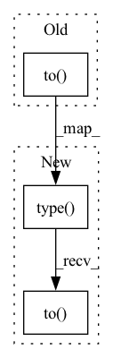

Pattern ID :18253

Before Change
self,
features
):
return {col: features[col].unsqueeze(0).to(self.device) for col in features}
def predict_one_sample(
self,
After Change
self,
features
):
return {col: torch.Tensor(features[col]).type(torch.long).unsqueeze(0).to(self.device) for col in features}
def predict_one_sample(
self,
In pattern: SUPERPATTERN
Frequency: 3
Non-data size: 3
Instances
Fragment ID: 59918208
Project Name: xiangking/ark-nlp
Commit Name: bf7f00cd3c7b14dd1bc06197e69d8997962b7778
Time: 2021-04-08
Author: wx15857152367@163.com
File Name: ark_nlp/factory/predictor/text_classification.py
M Class Name: TCPredictor
N Class Name: TCPredictor
M Method Name: _get_module_one_sample_inputs(2)
N Method Name: _get_module_one_sample_inputs(2)
M Parent Class: object
N Parent Class: object
M File Name: ark_nlp/factory/predictor/text_classification.py
N File Name: ark_nlp/factory/predictor/text_classification.py
M Start Line: 86
M End Line: 86
N Start Line: 86
N End Line: 86
'>
Before Change
self,
features
):
return {col: features[col].unsqueeze(0).to(self.device) for col in features}
def predict_one_sample(
self,
After Change
self,
features
):
return {col: torch.Tensor(features[col]).type(torch.long).unsqueeze(0).to(self.device) for col in features}
def predict_one_sample(
self,
'>
Fragment ID: 59918209
Project Name: xiangking/ark-nlp
Commit Name: bf7f00cd3c7b14dd1bc06197e69d8997962b7778
Time: 2021-04-08
Author: wx15857152367@163.com
File Name: ark_nlp/factory/predictor/text_match.py
M Class Name: TMPredictor
N Class Name: TMPredictor
M Method Name: _get_module_one_sample_inputs(2)
N Method Name: _get_module_one_sample_inputs(2)
M Parent Class: object
N Parent Class: object
M File Name: ark_nlp/factory/predictor/text_match.py
N File Name: ark_nlp/factory/predictor/text_match.py
M Start Line: 89
M End Line: 89
N Start Line: 89
N End Line: 89
'>
Before Change
else:
quantiles = self.quantiles
predictions = super().to_prediction(out)
return torch.stack(
[torch.tensor(scipy.stats.poisson(predictions.detach().cpu().numpy()).ppf(q)) for q in quantiles], dim=-1
).to(predictions.device)
class SMAPE(MultiHorizonMetric):
After Change
quantiles = self.quantiles
predictions = self.to_prediction(out)
return (
torch.stack(
[torch.tensor(scipy.stats.poisson(predictions.detach().cpu().numpy()).ppf(q)) for q in quantiles],
dim=-1,
)
.type(predictions.dtype)
.to(predictions.device)
)
class SMAPE(MultiHorizonMetric):
'>
Fragment ID: 59918206
Project Name: jdb78/pytorch-forecasting
Commit Name: bec3f98b91c82bf166339b6b0d1bdb439462e9b5
Time: 2023-04-07
Author: jan.beitner@inflexion.com
File Name: pytorch_forecasting/metrics/point.py
M Class Name: PoissonLoss
N Class Name: PoissonLoss
M Method Name: to_quantiles(3)
N Method Name: to_quantiles(3)
M Parent Class: MultiHorizonMetric
N Parent Class: MultiHorizonMetric
M File Name: pytorch_forecasting/metrics/point.py
N File Name: pytorch_forecasting/metrics/point.py
M Start Line: 49
M End Line: 52
N Start Line: 49
N End Line: 57